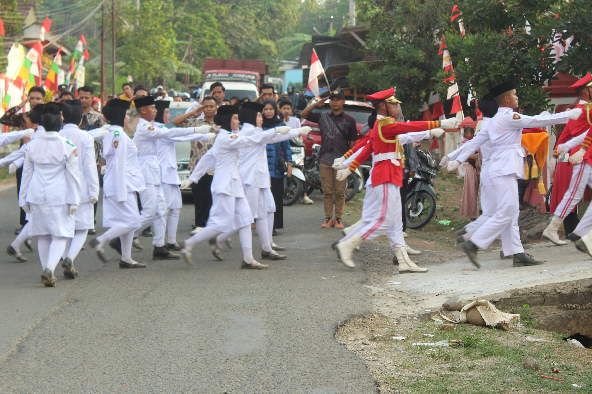
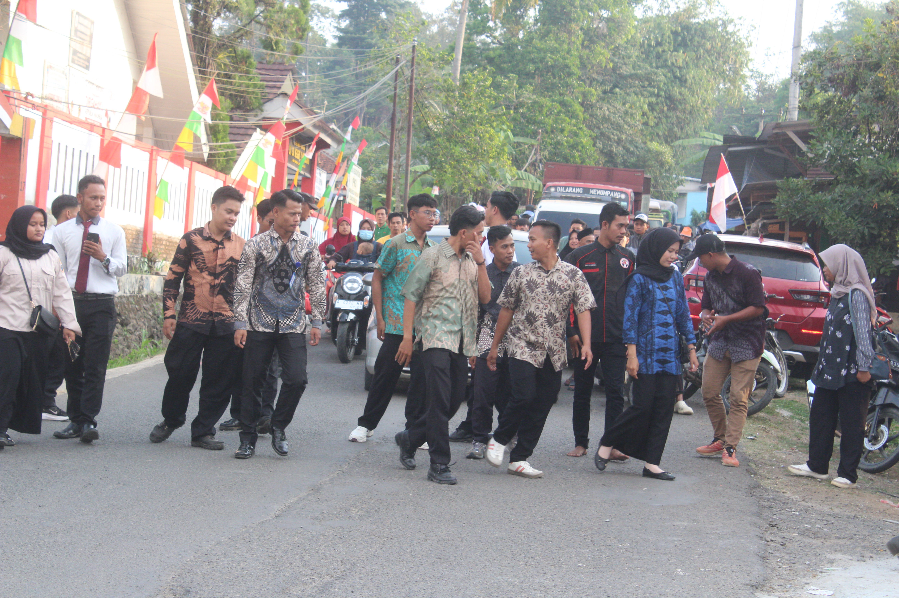
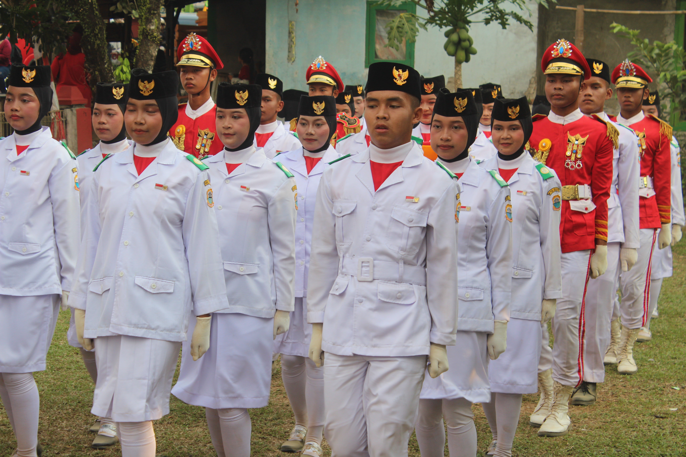
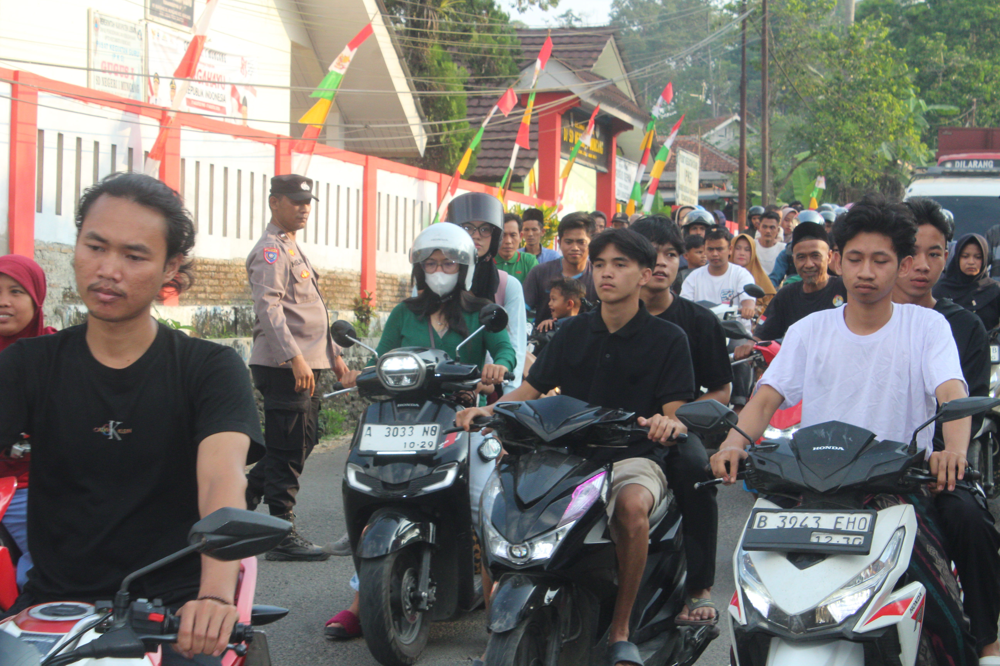

Galeri Kegiatan
Potret aktivitas akademik, hackathon, dan laboratorium riset.




Program Studi Teknik Informatika berfokus pada pengembangan Software Engineering, Artificial Intelligence, Cybersecurity, dan Data Science dengan kurikulum standar industri internasional.
Pembelajaran komprehensif menguasai Next.js, Cloud Computing, dan Machine Learning.
Kurikulum yang dirancang bersama pakar industri untuk memenuhi kebutuhan zaman di bidang kecerdasan buatan, cloud, dan software development.
Mengantongi predikat Unggul dari BAN-PT serta sertifikasi standar kualitas pendidikan teknologi internasional (IABEE).
Jaminan penyaluran kerja dan magang di berbagai BUMN, Unicorn Technology, serta instansi pemerintahan bereputasi.
Potret aktivitas akademik, hackathon, dan laboratorium riset.



